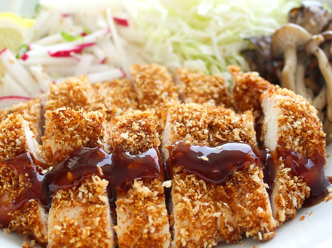

Chicken Katsu
Original Author: sakuraiiko

Chicken katsu is Japanese-style fried chicken. This is my family recipe and can also be used to make tonkatsu by using pork cutlets instead of chicken. Serve with white rice and tonkatsu sauce.
Ingredients
- Chicken: Four boneless chicken breast halves.
- Seasonings: Salt, pepper.
- Flour: Seals the moisture, adds flavour, and promotes browning.
- Egg: For the breading.
- Panko: Panko bread crumbs for the breading, crunchy.
- Oil: Canola or vegetable, something neutral with high smoke point.
Steps
So you got your ingredients, here's what you do:
- Season the chicken and dredge in flour.
- Coat the breast in egg and press into the Panko.
- Fry until golden brown.
Home